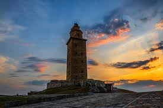

Bienvenidos a La Coruña
La Coruña es una ciudad costera del noroeste de España, capital de la provincia homónima en Galicia. Conocida por su Torre de Hércules, el faro romano más antiguo del mundo en uso, la ciudad combina historia, gastronomía, rutas naturales y una vibrante vida cultural.
Galería de la Provincia

Noticias sobre La Coruña
Cargando noticias...